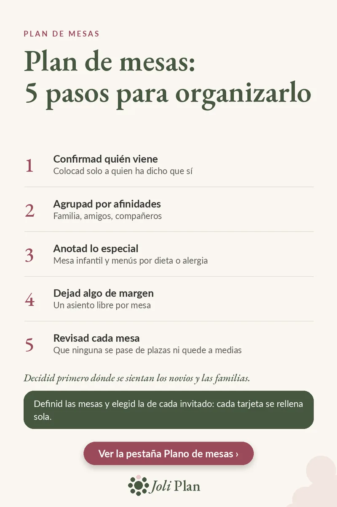

Invitados
Plan de mesas de boda: 5 pasos para organizarlo
Actualizado el 25/10/2026
El plan de mesas parece un rompecabezas, pero se resuelve con un orden claro. Estos son los cinco pasos, uno detrás de otro.
Ver el planificador de boda en Etsy ›

Los 5 pasos
- Confirmad quién viene. Colocad solo a quien ha dicho que sí.
- Agrupad por afinidades. Familia, amigos, compañeros.
- Anotad lo especial. Mesa infantil y menús por dieta o alergia.
- Dejad algo de margen. Un asiento libre por mesa.
- Revisad cada mesa. Que ninguna se pase de plazas ni quede a medias.
Antes de empezar
Decidid primero dónde se sientan los novios y las familias. Todo lo demás se organiza alrededor de esas mesas.
Trabajad siempre con la lista de confirmados, no con la de invitados. Así evitáis colocar a quien al final no viene.
Por qué dejar un asiento libre
Un asiento libre por mesa os da margen para un cambio de última hora: una persona que se suma o una mesa que necesita reajustarse. Sin ese margen, un solo cambio obliga a mover a muchas personas.
Preguntas frecuentes
¿Con qué lista se hace el plan de mesas?
Con la de confirmados, no con la de invitados.
¿Por qué dejar un asiento libre por mesa?
Da margen para un cambio de última hora sin tener que mover a muchas personas.